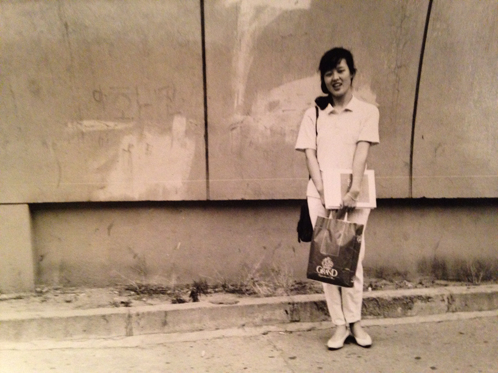
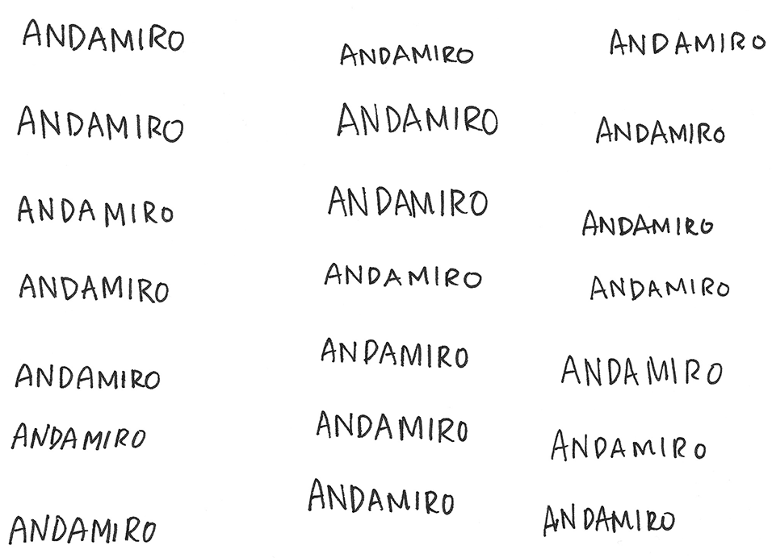

엄마가 스물 두살때는 무슨생각들을 했어?
What was on your mind when you were 22?
1
2
3
4
5
6
7
8
9
10
11
12
13
14
15
16
17
18
19
20
Bomin Jeon
The café was an investment and a bet for my mom and me. I took a year of absence from my college to focus on preparing and opening the café in September 2016. She gathered all of her previous experiences and knowledge about small business to use as a guide. For both of us, it was still a new and big challenge. It took a whole year of trial, error, researching, and learning to open the doors. I see the café as a livelihood we desperately needed and an ultimate collaboration between us. It tested the communication, the language and cultural barrier, between us. It pushed us to be vocal about our needs and perspective, because when we weren’t vocal, the next steps became unclear. Our communication still isn’t perfect, but we have gotten better. Our café still isn’t perfect, but we have created something out of nothing. And that means a lot to me.
Bomin Jeon
B.J.
엄마가 스물 두살때는 무슨생각들을 했어?
What was on your mind when you were 22?
Ran Jeon
R.J.
내가 스물 두살때는 한국이 너무 암울했기때문에 나 자신한테 포커 스 못했어. 그렇다고 내가 학교를 다니 도 않고 직장이없었기때문 에 사회안에 소속감이있지도 않았어. 내 미래, 내가 속해있는 사회에 대한 고민? 어떤형식으로도 참여할수없는 상황이였어. 무력감? 혼 란스러웠던 시기였던것같아.
When I was 22, Korea was a very depressing place and I couldn’t focus on myself. I also didn’t attend school or have a job at the time, so I didn’t feel like I belonged in the society. I worried about my future and problems in the society, I felt like I couldn’t participate in the society in any way. I felt helpless. It was a confusing time.
Bomin and Keumran Yun at Café Andamiro, 2017, Image by Reginald Thomas II for Baltimore City Paper.
엄마가 스물네살엔 무슨 생각들을 했어?
What about when you were 24?
일을 시작했고. 연애를시작했고. 사회생활을 처음으로 시작했지. 그래픽 디자인 일을통해서 많은 사람들을 만났지. 그세상에 있는 어 른들을 많이 맞났지. 나랑 비슷한 사람들을 만나기 시작하면서 새로 시작하는일들에 관해 좀 즐거워졌어. 배워가는 과정들이 즐거웠어.
I started my first job. I started dating and I had a social life for the first time. I met many people through the graphic design field. I met many adults in the graphic design world. As I met people who were like me, I became enthusiastic about starting new work. I also enjoyed the learning process.
그당시에 미국에대한 생각을 했어?
Did you ever think about the U.S. at the time?
실제 내가 하는일이 디자인이다 보니깐 그당시 인터넷이 발달한 상태 가 아니였으니깐, 잡지라던지… 그 게 전부이잖아. 한국도 한국의 디자인이 있지만, 디자인의 계념자체가 서구에서 들어왔으니깐 유럽 이나 미국을 생각하지 않을수없지. 인터뷰 잡지같은거. 영어 타이포 그래피를 많이쓰게 되니깐 잡지나 사진을 많이 봤지.
Because my work was design, I had to think about the U.S. or Europe. Even though Korea had its own design style, the concept of graphic design was imported as a Western study. At the time, the internet was not as developed and we learned a lot through reading magazines produced from the West. We read magazines like Interview to learn about English typography.


Handouts on: How to start your own café in Baltimore City, 2018, by Bomin Jeon.
유학이나 다른나라에서 공부하고싶다는 생각해본적있어?
Did you ever want to study abroad?
유학이 쉽지않았어. 학교를 다니고 있다던지 돈이 많고 재능이 있어 야 가능했기 때문에 그당시 나의 상황에서는 힘들었어.
At the time, that was only possible for people who were very talented and recognized. It was something I couldn’t even dream about financially.
그때 막연하게 생각했던 미국은 어땠어?
What was your perspective of the U.S. at the time?
미국을 동경한적은 없어 사실. 나는 사실 유럽잡지들을 많이 보고 작 업했어. 미국에가서 공부하고싶다는 각이없었어. 나는 80년대를 살았기 때문에 미국이 우리한테 준 영향을 긍정적으로 생각하지 않 았기때문에...
I never dreamed about the U.S. I actually preferred referencing European magazines for work. I never wanted to study here. I lived through the ‘80s, and because of that, I felt negatively about the U.S.’s influence.


Handouts on: How to start your own café in Baltimore City, 2018, by Bomin Jeon.
80년대에 미국의 영향력은 어땠어?
What was the U.S.’s influence during Korea’s ‘80s?
실제 역사적으로 미국이 한국전쟁에서 소련도 그렇고 자기의 이익을 위해서 한반도를 반을 나누는데 큰 활을 했다고 생각해. 우리가 결 정하지 못하고 강대국들이 자기의 이익을 위해서 분단했다고 생각 해. 광주사태때도 미국이 방관을 했다고 생각해. 광주 사태이후에는 젊은사람들이 반미 감정이많았지.
Historically, the U.S. and USSR played a big part in dividing the Korean peninsula in half, as two countries. We could not make our own decision as a nation, and were forced to split by the bigger forces. They did it for their own gains. Also, the U.S.’s army force in Korea turned a blind eye during the Gwangju Uprising. After the massacre, there was anti-U.S. sentiment amongst young people.
미국에와서 가장 힘들었던 일들이 뭐야? 느낀거? 컬처쇼크?
What were the hardest moments after coming to the U.S.? Things that you felt? Culture shock?
특별히 미국에대해선 컬쳐쇼크는 없었어. 미국은 자본주의의 종주국 이고 어떻게보면 예상했던것들이 현실인곳이지. 시스템은 엄청많은 데 그 시스템들이 사회를 위해 제대로 돌아가는 느낌이 아니야. 그냥 그리 선진국같지 않아. 페어 하지않다는 느낌. 사회보장제도라던지 환경문제라던지, 좀더 잘 되어있을줄 알았는데 그게 아니라는게 충 격적이지. 한국의 경제규모를봤을때 미국이 훨씬잘살고 세계에 큰 영향력을 끼치는 나라로서 얘네들의 ... 어디서나 일회용을 아무렇지 않게 사용하는거에대한 쇼크? 편의점, 패스트푸드 심지어 급식까지 스티로폼에 밥주는거에 컬쳐쇼크야. 가정집에서도 일회용쓰고 버리 고 그런걸 아무렇지 않게생각하는게 너무 충격이였어.
There wasn’t an especially culturally shocking thing. A lot of things I predicted were real—like in most capitalist countries, there are so many systems, but it doesn't feel like they work to benefit the society. Also, it [the U.S.] doesn’t feel like a developed country. There is unfairness. I expected it to have a better social security system and deal with environmental issues better. This country has a much bigger economy, wealth, and power than Korea, but they use disposable items like it’s nothing. It was shocking to me that they serve food on Styrofoam at school lunch, fast food restaurants, convenience stores, and even at home.
Photo of young Keumran Yun, 1989.
한국이 그리울때 엄마가 하는일은?
What do you do when you miss Korea?
한국의 자연을 본다. 유튜브가서 한국의 바다나 산이나오는 영상을 찾아봐. 내가 않가본 아프리카를 상상하면서 아프리카에 대한 다큐 를 보는거랑 내가 이미경험하고 햇빛을 아는 익숙한곳을 보는건 다 른 느낌이거든. 한국은 보면 냄새랑 빛이 다 느껴져.
I look for Korea’s nature. I search videos of the Korean countryside, oceanside, and mountains on YouTube. Watching a video of Korea’s nature is a very different experience from watching a documentary about a place I haven’t been to, like somewhere in Africa. I can smell and feel the sunlight when I watch videos of home.
자연이 가장 그리워?
Do you miss the nature the most?
한국 하면 냄새, 바다냄새, 풀냄새 이런게 그리워.
I miss the smell. The smell of ocean and grass from Korea.
10년전 나에게 하고싶은 말은?
What do you want to say to the version of yourself from 10 years ago?
좀더 준비하고 계획적으로 왔어야 하는건데. 그런게 후회스러워. 그건 우리 가족적인 상황이긴하지만.
I wish we were more planned and strategic about coming here. I regret not being prepared. Well, that was our family’s situation.
어디로 이사 가는거?
Like where we moved?
어디로 이사가느냐, 너희가 어떤걸 공부하고 또 나도 어떤걸 공부할 수 있고. 이런걸 정리하고 최선의 선택을 하고왔어야 하는건데. 그당시에 최선에 선택이였지.
Where to move. What to study for you and myself. I wish I made a more informed decision. But it was the choice at the time.
이민자들이 경험하는 어려움 그리고 컬쳐? 이런것들이 와닿아?
Do you relate to immigrants’ culture and hardships?
나같은 경우는 미국삶에대한 동경이나 아메리칸 드림이 없는 사람이 다 보니깐 이민자들이 겪는 인종차별이라던가 그런게 와닿지 않아. 내가 바라는게 없었으니깐. 근데 내가 이 사회안으로 적극적으로 들 어가려고 하지않았기때문에 부딛힘이 적었던거지. 나는 처음부터 오 너였잖아. 내가 어디가서 일해야하는 경우라면 조금 다르겠지. 미국 사람들이 나를 차별할수 있지만 나는 그게 우습다고 생각했어. 내가 그들 밑에 일을했었으면 쉽게 상처받았겠지. 인종차별은 인격의 문 제라고 느껴져. 사람의 인간성의문제인거지. 너는 느낀적있어?
Since I didn’t yearn for the American lifestyle and didn’t have an “American dream,” the racism that immigrants face didn’t impact me—because I didn’t expect much. Also, I didn’t try to integrate into the society, so I didn’t encounter it as much. I was a business owner from the beginning. If I had to work under somebody, that would have been different. Even when others discriminated against me, I thought it was actually foolish. If I worked under them, that would have become a scar. I think it’s a matter of human decency in the end. Did you experience it too?
Sketches of the Andamiro logo by Keumran Yun, 2016.
나는 하이스쿨때 무식한 질문을 많이 받은것같아. 어울리기가 힘들 었어. 가게 만들때 컨트랙터랑 얘기할때. 근데 그건 여러 레벨이였던 것같아. 내가 어리고, 여자고 ...
In high school, I got ignorant questions. It was hard for me to make friends. I think I experienced it when we started the business. I had to talk to the contractor. That was a different level because I am young and a woman—
나는 영어를 못하고
And I couldn’t speak English—
그치.
Yes.
아주 복합적이였지. 어느 레이어에서 봐도 말이되는데 그것도 어떻 게생각해보면 인격의 문제인거지. 자기 식데로 생각하는거지.
It was a complex situation, it didn’t make sense in any layers. It was a problem of his personality. He really thought in his way.
선입견인거지.
It was prejudice.
나는 사실 가게하면서 언어적인 문제가 제일 큰거라고 생각했어.
I think the biggest thing was the language barrier.
집이라고 느껴진곳이 있었어?
Did you ever feel at home here?
없었어. 나는 미국식집의 레이아웃이 나한테 않맞아. 내가 공간에 예 민하고 중요시생각해서 그런것같아. 내가 집을 지않는한 해결될수있 는게 아닌것같아.
I don’t like the layout of American homes. I think it’s because I am sensitive and particular about my own space. I think it will only happen when I build my own house.
집이나 홈베이스를 만들려면 무엇이 필요한거같아?
What’s needed to make a home?
공간이 주는 느낌. 내가 원하는 구조, 칼러, 소재 그리고 컴팩트함.
It’s about the vibe of the space. It has to have the layout, color, elements that I like, and be compact.